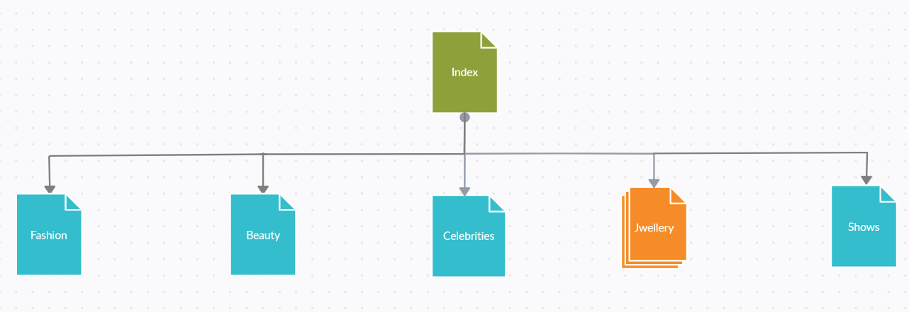

Report: Large Coursework
Name: Janvi Saluja
INTRODUCTION:
- I choose to make a magazine on Fashion and named it "Sugar Fashion".
- It is greatly influenced by Vogue magazine, Louis Vuitton and Chanel products.
- I decided to go for the hierarchical model.
- Even though I decided to go for the hierarchical model my Home page does have few links connecting to other pages.
INSPIRATION:
- I closely follow latest fashion trends and like to talk about it with people around me. So, I decided to go for a fashion magazine.
- I find myself very invloved in Korean Culture. I closely follow K-Pop Idols and their fashion and dressing sense. I decided to add that personal touch in my project.
- I wanted to make different layouts for each article and tried my best to not repeat the same pattern. I went through a lot of free sample templates present on Google to find the perfect layout for my project.>
ACCESSIBILTY:
- Instead of using different colors I decided to go for the classic black and white color to make it easy to read and understand. I used brick red color in few occassions as a background color for the images to make the image pop out.
- I tried to use less words as much as possible and tried not to use any words to make it harder for someone to understand. I used proper names for links so the user knows which link with led them to which page.
- I added a lot of animations in my project and made sure that they are smooth and have an accurate timing and doesnot look rushed as it trigger sickness motion in some people.
USABILITY:
- The project is accessible in both desktop version and the mobile version. The page is best viewed in 1994 x 835 dimensions for the desktop vesion and 360 x 740 dimensions for the mobile version with 75% zoomed in.
- The content on the website is relevant. It has been designed to provide the users with all the information they are searching for and decided to ue the website.
- I tried to keep the content that is familiar with the users and tried not to use any information that might be misleading or I am not sure about it and doesnot have a good source t back it up.
LEARNING PROCESS:
- I learnt how to make several animations in the website.
- I learnt how to use Javascript to control the video playing.
- The most importnat thing I learnt was how to make website responsive. For my mid term project I found it very hard to make a page responsive but I feel I am more comfortable with it now.
STRONG POINTS:
- I feel that the content in my project is very relevant. I can back it up with good resources and know that the information is always true in all situations. I used images of a lot of well-known people to attract more audience and people check the website to
get an update on them to increase my viewers.
IMPROVEMENTS:
- In the future I would like to add a dark and light mode I did try to add it but it did not looked very consistent. Moreover, I would like to add a User account so people can like and save the posts and pictures they like.
RESOURCES:
- Sitemap was made using free desktop version of Creately.
- The logo and favicon are made using free version of Canva.
- The code editor used was Atom.
- The images were taken from all the open sources like Google, Pexels, etc.
- The information has been taken from Louis Vuitton, The Vogue magazine and Chanel website.
- Free version of uizard was used to make the wireframes and mockups.
APPENDICES:
-
Site Map

-
Wireframes
-
MockUps